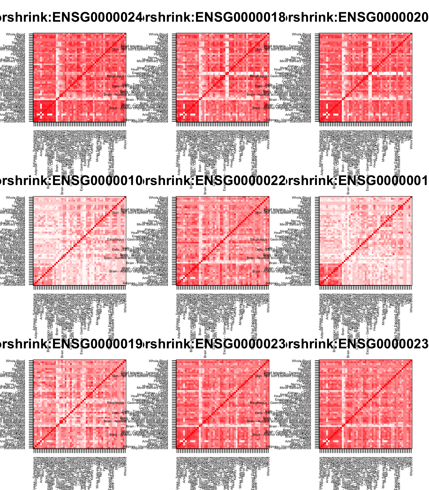

GSEA All tissues :: CorShrink vs CountClust
Kushal K Dey 5/12/2017 Last updated: 2017-05-25
Code version: bb4df3b
In this script, we try to perform some gene set enrichment analysis of the CountClust clusters with respect to the CorShrink patterns observed
ash_cor_result <- get(load("../output/ash_cor_only_voom_pearson_normal_gtex_tissues.rda"))
common_samples <- get(load("../output/common_samples.rda"))
tissue_labels <- read.table(file = "../data/GTEX_V6/samples_id.txt")[,3]
#library(data.table)
#data <- data.frame(fread("../data/GTEX_V6/cis_gene_expression.txt"))
#matdata <- t(data[,-c(1,2)])
gene_names <- as.character(read.table(file = "../data/GTEX_V6/gene_names_GTEX_V6.txt")[,1])
gene_names_1 <- as.character(sapply(gene_names, function(x) return(strsplit(x, "[.]")[[1]][1])))
U <- unique(tissue_labels)
Brain related
##################### Brain high ############################
tab <- array(0, dim(ash_cor_result)[3])
for(m in 1:dim(ash_cor_result)[3]){
temp <- ash_cor_result[order_index[1:13], order_index[(1:13)],m]
tab[m] <- median(temp[row(temp) > col(temp)])
}
tval <- (tab - mean(tab))/sd(tab)
names(tval) <- gene_names_1cluster_list <- vector(mode = "list", length = 20)
for(l in 1:20){
cluster_list[[l]] <- as.character(read.table(paste0("../utilities/gene_names_clus_", l, ".txt"))[,1])
}
related_genes <- c();
for(l in 1:length(cluster_list)){
related_genes <- c(related_genes, cluster_list[[l]]);
}
related_genes <- unique(related_genes)
other_genes <- setdiff(gene_names_1, related_genes)
cluster_list[[7]] <- sample(other_genes, 100, replace = FALSE)
library(fgsea)Loading required package: Rcppout <- fgsea(pathways = cluster_list,
stats = tval,
nperm = 10000)
out pval padj ES NES nMoreExtreme size
1: 0.0003019324 0.001006441 0.4399268 1.8779341 1 100
2: 0.0002950723 0.001006441 -0.4004356 -1.8859170 0 102
3: 0.0039251208 0.007850242 0.3822009 1.6315171 25 100
4: 0.0002970003 0.001006441 -0.4682077 -2.1987888 0 101
5: 0.0284191829 0.047365305 -0.2914532 -1.3683894 95 100
6: 0.0032457952 0.007212878 -0.3270825 -1.5404483 10 102
7: 0.0526871981 0.070249597 0.3136253 1.3387857 348 100
8: 0.1413715147 0.166319429 0.2836514 1.2135188 937 101
9: 0.0008880995 0.002220249 -0.3572435 -1.6772783 2 100
10: 0.3532608696 0.392512077 0.2471272 1.0549223 2339 100
11: 0.0891059799 0.111382475 -0.2658578 -1.2482172 300 100
12: 0.0459683497 0.065669071 0.3173883 1.3578522 304 101
13: 0.7958937198 0.795893720 0.1957886 0.8357709 5271 100
14: 0.0008880995 0.002220249 -0.3538446 -1.6613203 2 100
15: 0.0360809179 0.055509104 0.3242753 1.3842478 238 100
16: 0.0001512173 0.001006441 0.4428859 1.8962076 0 102
17: 0.0001512173 0.001006441 0.7094339 3.0374278 0 102
18: 0.5161533816 0.543319349 0.2271291 0.9695556 3418 100
19: 0.0001540357 0.001006441 0.5031569 2.1086812 0 90
20: 0.0054347826 0.009881423 0.3731960 1.5930774 35 100
leadingEdge
1: ENSG00000215513,ENSG00000099622,ENSG00000174652,ENSG00000113369,ENSG00000120738,ENSG00000112715,
2: ENSG00000171867,ENSG00000188191,ENSG00000132879,ENSG00000162545,ENSG00000124507,ENSG00000187189,
3: ENSG00000165507,ENSG00000167772,ENSG00000205362,ENSG00000147872,ENSG00000178878,ENSG00000100336,
4: ENSG00000163681,ENSG00000198624,ENSG00000112658,ENSG00000064999,ENSG00000113657,ENSG00000259716,
5: ENSG00000151468,ENSG00000164761,ENSG00000076706,ENSG00000110906,ENSG00000255905,ENSG00000064205,
6: ENSG00000125898,ENSG00000106123,ENSG00000179388,ENSG00000108352,ENSG00000178934,ENSG00000179859,
7: ENSG00000103196,ENSG00000168394,ENSG00000110455,ENSG00000172062,ENSG00000254852,ENSG00000267270,
8: ENSG00000149257,ENSG00000175592,ENSG00000173530,ENSG00000148926,ENSG00000083444,ENSG00000044574,
9: ENSG00000147533,ENSG00000164124,ENSG00000105290,ENSG00000179195,ENSG00000154945,ENSG00000068903,
10: ENSG00000144381,ENSG00000197142,ENSG00000090920,ENSG00000155850,ENSG00000172831,ENSG00000066230,
11: ENSG00000104419,ENSG00000158079,ENSG00000143344,ENSG00000181409,ENSG00000189058,ENSG00000134121,
12: ENSG00000077150,ENSG00000137959,ENSG00000240342,ENSG00000231389,ENSG00000137804,ENSG00000118503,
13: ENSG00000132141,ENSG00000134202,ENSG00000128944,ENSG00000204390,ENSG00000115138,ENSG00000184378,
14: ENSG00000148677,ENSG00000131143,ENSG00000106617,ENSG00000130528,ENSG00000156467,ENSG00000173660,
15: ENSG00000106211,ENSG00000143546,ENSG00000149573,ENSG00000134531,ENSG00000258232,ENSG00000167553,
16: ENSG00000101187,ENSG00000108342,ENSG00000068001,ENSG00000128016,ENSG00000134470,ENSG00000267607,
17: ENSG00000204525,ENSG00000018280,ENSG00000185201,ENSG00000163220,ENSG00000171051,ENSG00000163221,
18: ENSG00000156968,ENSG00000100219,ENSG00000112312,ENSG00000260065,ENSG00000218510,ENSG00000006652,
19: ENSG00000132002,ENSG00000135245,ENSG00000244734,ENSG00000187010,ENSG00000206172,ENSG00000011422,
20: ENSG00000105697,ENSG00000047457,ENSG00000197249,ENSG00000159403,ENSG00000182326,ENSG00000171236,It is dominated by the Clusters 17 and 19 which are blood related tissues in terms of positive effects. We need to carry out more focussed analysis.
High intra corr in Brain, low intra corr in others
##################### Brain high, others low ############################
tab <- array(0, dim(ash_cor_result)[3])
for(m in 1:dim(ash_cor_result)[3]){
temp <- ash_cor_result[order_index[1:13], order_index[(1:13)],m]
temp1 <- ash_cor_result[order_index[-(1:13)], order_index[-(1:13)],m]
tab[m] <- median(temp[row(temp) > col(temp)]) - median(temp1[row(temp1) > col(temp1)])
}
tval <- (tab - mean(tab))/sd(tab)
names(tval) <- gene_names_1cluster_list <- vector(mode = "list", length = 20)
for(l in 1:20){
cluster_list[[l]] <- as.character(read.table(paste0("../utilities/gene_names_clus_", l, ".txt"))[,1])
}
related_genes <- c();
for(l in 1:length(cluster_list)){
related_genes <- c(related_genes, cluster_list[[l]]);
}
related_genes <- unique(related_genes)
other_genes <- setdiff(gene_names_1, related_genes)
cluster_list[[7]] <- sample(other_genes, 100, replace = FALSE)
library(fgsea)
out <- fgsea(pathways = cluster_list,
stats = tval,
nperm = 10000)
out pval padj ES NES nMoreExtreme size
1: 0.6100453946 0.6421530470 0.2108852 0.9228302 4165 100
2: 0.0412436548 0.0749884633 -0.2749053 -1.3428175 129 102
3: 0.0001464343 0.0007321716 0.4675199 2.0458594 0 100
4: 0.4710873664 0.5888592080 -0.2024237 -0.9877233 1498 101
5: 0.0861033826 0.1324667425 0.2943022 1.2878617 587 100
6: 0.5308029197 0.5920495275 0.2186513 0.9600073 3635 102
7: 0.1979199496 0.2638932661 -0.2342840 -1.1394253 627 100
8: 0.0026392962 0.0075408463 0.3755805 1.6458591 17 101
9: 0.0050425465 0.0126063662 -0.3238087 -1.5748228 15 100
10: 0.0077610192 0.0172467093 0.3528994 1.5442820 52 100
11: 0.1540489091 0.2200698701 0.2755092 1.2056240 1051 100
12: 0.5328445748 0.5920495275 0.2190444 0.9598907 3633 101
13: 0.0816262212 0.1324667425 -0.2595515 -1.2623124 258 100
14: 0.7494484715 0.7494484715 -0.1798908 -0.8748875 2377 100
15: 0.0001464343 0.0007321716 0.5001941 2.1888414 0 100
16: 0.0001459854 0.0007321716 0.5431301 2.3846599 0 102
17: 0.0001459854 0.0007321716 0.6487370 2.8483363 0 102
18: 0.0087860595 0.0175721189 0.3488751 1.5266716 59 100
19: 0.0023760024 0.0075408463 0.3906544 1.6806193 15 90
20: 0.0002928686 0.0011714746 0.4090685 1.7900773 1 100
leadingEdge
1: ENSG00000120738,ENSG00000176046,ENSG00000112715,ENSG00000177606,ENSG00000099622,ENSG00000113369,
2: ENSG00000008735,ENSG00000137267,ENSG00000127561,ENSG00000109472,ENSG00000058404,ENSG00000088899,
3: ENSG00000123689,ENSG00000146674,ENSG00000166819,ENSG00000165507,ENSG00000178878,ENSG00000187498,
4: ENSG00000140682,ENSG00000198624,ENSG00000113657,ENSG00000197256,ENSG00000058272,ENSG00000064999,
5: ENSG00000099860,ENSG00000171223,ENSG00000198959,ENSG00000161638,ENSG00000143878,ENSG00000072952,
6: ENSG00000114315,ENSG00000170345,ENSG00000142178,ENSG00000136826,ENSG00000176845,ENSG00000136235,
7: ENSG00000257433,ENSG00000064012,ENSG00000114391,ENSG00000267040,ENSG00000157796,ENSG00000119714,
8: ENSG00000175592,ENSG00000173530,ENSG00000134013,ENSG00000148926,ENSG00000168140,ENSG00000182718,
9: ENSG00000198121,ENSG00000157827,ENSG00000260465,ENSG00000251660,ENSG00000126878,ENSG00000173786,
10: ENSG00000197142,ENSG00000155850,ENSG00000090920,ENSG00000172831,ENSG00000149809,ENSG00000144381,
11: ENSG00000132470,ENSG00000177303,ENSG00000269926,ENSG00000168209,ENSG00000091409,ENSG00000117394,
12: ENSG00000137804,ENSG00000118503,ENSG00000077150,ENSG00000112118,ENSG00000072274,ENSG00000109320,
13: ENSG00000163467,ENSG00000148200,ENSG00000075702,ENSG00000140932,ENSG00000204536,ENSG00000115241,
14: ENSG00000145730,ENSG00000242349,ENSG00000078114,ENSG00000186073,ENSG00000106617,ENSG00000122367,
15: ENSG00000106211,ENSG00000149573,ENSG00000134531,ENSG00000171401,ENSG00000258232,ENSG00000143546,
16: ENSG00000128016,ENSG00000108342,ENSG00000128342,ENSG00000068001,ENSG00000134470,ENSG00000144802,
17: ENSG00000107738,ENSG00000141574,ENSG00000100504,ENSG00000125753,ENSG00000100985,ENSG00000122862,
18: ENSG00000112312,ENSG00000100219,ENSG00000156968,ENSG00000051108,ENSG00000171105,ENSG00000187840,
19: ENSG00000132002,ENSG00000011422,ENSG00000135245,ENSG00000187837,ENSG00000169429,ENSG00000240758,
20: ENSG00000105697,ENSG00000047457,ENSG00000182326,ENSG00000159403,ENSG00000197249,ENSG00000124253,unlist(lapply(out$leadingEdge, function(x) return(length(x)))) [1] 38 37 34 41 21 26 32 30 45 22 18 21 27 34 39 39 61 33 37 29
cluster 3
genes_clus <- cluster_list[[3]][1:9]
#genes_clus <- out$leadingEdge[[1]][1:9]
matched_indices <- match(genes_clus, gene_names_1)
par(mfrow = c(3,3))
for(m in 1:length(matched_indices)){
col=c(rev(rgb(seq(1,0,length=1000),1,seq(1,0,length=1000))),
rgb(1,seq(1,0,length=1000),seq(1,0,length=1000)))
image(as.matrix(ash_cor_result[order_index,order_index, matched_indices[m]]),
col=col, main=paste0("corshrink:", genes_clus[m]), cex.main=2,
xaxt = "n", yaxt = "n", zlim=c(-1,1))
axis(1, at = seq(0, 1, length.out = 53), labels = U, las=2, cex.axis = 0.5)
axis(2, at = seq(0, 1, length.out = 53), labels = U, las=2, cex.axis = 0.5)
}
cluster 9
genes_clus <- cluster_list[[9]][1:9]
#genes_clus <- out$leadingEdge[[1]][1:9]
matched_indices <- match(genes_clus, gene_names_1)
par(mfrow = c(3,3))
for(m in 1:length(matched_indices)){
col=c(rev(rgb(seq(1,0,length=1000),1,seq(1,0,length=1000))),
rgb(1,seq(1,0,length=1000),seq(1,0,length=1000)))
image(as.matrix(ash_cor_result[order_index,order_index, matched_indices[m]]),
col=col, main=paste0("corshrink:", genes_clus[m]), cex.main=2,
xaxt = "n", yaxt = "n", zlim=c(-1,1))
axis(1, at = seq(0, 1, length.out = 53), labels = U, las=2, cex.axis = 0.5)
axis(2, at = seq(0, 1, length.out = 53), labels = U, las=2, cex.axis = 0.5)
}
cluster 15
genes_clus <- cluster_list[[15]][1:9]
#genes_clus <- out$leadingEdge[[1]][1:9]
matched_indices <- match(genes_clus, gene_names_1)
par(mfrow = c(3,3))
for(m in 1:length(matched_indices)){
col=c(rev(rgb(seq(1,0,length=1000),1,seq(1,0,length=1000))),
rgb(1,seq(1,0,length=1000),seq(1,0,length=1000)))
image(as.matrix(ash_cor_result[order_index,order_index, matched_indices[m]]),
col=col, main=paste0("corshrink:", genes_clus[m]), cex.main=2,
xaxt = "n", yaxt = "n", zlim=c(-1,1))
axis(1, at = seq(0, 1, length.out = 53), labels = U, las=2, cex.axis = 0.5)
axis(2, at = seq(0, 1, length.out = 53), labels = U, las=2, cex.axis = 0.5)
}
cluster 16
genes_clus <- cluster_list[[16]][1:9]
#genes_clus <- out$leadingEdge[[1]][1:9]
matched_indices <- match(genes_clus, gene_names_1)
par(mfrow = c(3,3))
for(m in 1:length(matched_indices)){
col=c(rev(rgb(seq(1,0,length=1000),1,seq(1,0,length=1000))),
rgb(1,seq(1,0,length=1000),seq(1,0,length=1000)))
image(as.matrix(ash_cor_result[order_index,order_index, matched_indices[m]]),
col=col, main=paste0("corshrink:", genes_clus[m]), cex.main=2,
xaxt = "n", yaxt = "n", zlim=c(-1,1))
axis(1, at = seq(0, 1, length.out = 53), labels = U, las=2, cex.axis = 0.5)
axis(2, at = seq(0, 1, length.out = 53), labels = U, las=2, cex.axis = 0.5)
}
cluster 17
genes_clus <- cluster_list[[17]][1:9]
#genes_clus <- out$leadingEdge[[1]][1:9]
matched_indices <- match(genes_clus, gene_names_1)
par(mfrow = c(3,3))
for(m in 1:length(matched_indices)){
col=c(rev(rgb(seq(1,0,length=1000),1,seq(1,0,length=1000))),
rgb(1,seq(1,0,length=1000),seq(1,0,length=1000)))
image(as.matrix(ash_cor_result[order_index,order_index, matched_indices[m]]),
col=col, main=paste0("corshrink:", genes_clus[m]), cex.main=2,
xaxt = "n", yaxt = "n", zlim=c(-1,1))
axis(1, at = seq(0, 1, length.out = 53), labels = U, las=2, cex.axis = 0.5)
axis(2, at = seq(0, 1, length.out = 53), labels = U, las=2, cex.axis = 0.5)
}
Which tissues do these clusters corrsspond to?
clusters 15, 16 mainly correspond to Esophagus Mucosa and Lung. Cluster 3 corresponds to Breast and Adipose - the fatty issues. Cluster 9, which is one of the rare clusters with strong negative effect in gsea corresponds to the Brain-spinal cord genes, which we know have less correlation among the brain tissues.
High Brain vs other tissues
tab <- array(0, dim(ash_cor_result)[3])
for(m in 1:dim(ash_cor_result)[3]){
temp <- ash_cor_result[order_index[1:13], order_index[-(1:13)],m]
tab[m] <- median(temp[row(temp) > col(temp)])
}
tval <- (tab - mean(tab))/sd(tab)
names(tval) <- gene_names_1cluster_list <- vector(mode = "list", length = 20)
for(l in 1:20){
cluster_list[[l]] <- as.character(read.table(paste0("../utilities/gene_names_clus_", l, ".txt"))[,1])
}
related_genes <- c();
for(l in 1:length(cluster_list)){
related_genes <- c(related_genes, cluster_list[[l]]);
}
related_genes <- unique(related_genes)
other_genes <- setdiff(gene_names_1, related_genes)
cluster_list[[7]] <- sample(other_genes, 100, replace = FALSE)
library(fgsea)
out <- fgsea(pathways = cluster_list,
stats = tval,
nperm = 10000)
out pval padj ES NES nMoreExtreme size
1: 0.038901368 0.07780274 0.5782255 1.5779613 380 100
2: 0.010526316 0.03007519 -0.2088397 -1.7666639 1 102
3: 0.979579334 0.98684747 0.1220627 0.3331057 9593 100
4: 0.005154639 0.01766544 -0.5092449 -4.3156824 0 101
5: 0.004807692 0.01766544 -0.3949662 -3.3218928 0 100
6: 0.005263158 0.01766544 -0.2742055 -2.3196206 0 102
7: 0.560445171 0.82689110 0.3479468 0.9495372 5488 100
8: 0.986847471 0.98684747 0.1102071 0.3009690 9678 101
9: 0.014423077 0.03605769 -0.2081794 -1.7509084 2 100
10: 0.806309986 0.93174960 0.2468599 0.6736738 7896 100
11: 0.004807692 0.01766544 -0.2594446 -2.1820782 0 100
12: 0.292108483 0.48684747 0.4431670 1.2102629 2864 101
13: 0.122830304 0.22332783 0.5189866 1.4162999 1202 100
14: 0.004807692 0.01766544 -0.2365896 -1.9898551 0 100
15: 0.838574638 0.93174960 0.2305841 0.6292576 8212 100
16: 0.810436201 0.93174960 0.2461823 0.6720396 7951 102
17: 0.005299633 0.01766544 0.6431482 1.7556949 51 102
18: 0.578823770 0.82689110 0.3408390 0.9301402 5668 100
19: 0.028759244 0.06390943 0.6036060 1.6466390 279 90
20: 0.738309169 0.93174960 0.2780401 0.7587638 7230 100
leadingEdge
1: ENSG00000215513,ENSG00000174652,ENSG00000203875,ENSG00000099622,ENSG00000152117,ENSG00000180902,
2: ENSG00000117016,ENSG00000198794,ENSG00000106976,ENSG00000130758,ENSG00000105649,ENSG00000197457,
3: ENSG00000119185,ENSG00000167772,ENSG00000147872,ENSG00000165507,ENSG00000178878,ENSG00000182118,
4: ENSG00000213160,ENSG00000213160,ENSG00000166444,ENSG00000113657,ENSG00000259627,ENSG00000114861,
5: ENSG00000171223,ENSG00000148671,ENSG00000140545,ENSG00000038427,ENSG00000197380,ENSG00000166482,
6: ENSG00000244617,ENSG00000272084,ENSG00000154359,ENSG00000048707,ENSG00000176845,ENSG00000178184,
7: ENSG00000254353,ENSG00000145050,ENSG00000254837,ENSG00000254701,ENSG00000137760,ENSG00000108785,
8: ENSG00000148926,ENSG00000044574,ENSG00000173530,ENSG00000160691,ENSG00000083444,ENSG00000142552,
9: ENSG00000260465,ENSG00000164124,ENSG00000266844,ENSG00000137285,ENSG00000105290,ENSG00000049089,
10: ENSG00000066230,ENSG00000174236,ENSG00000231852,ENSG00000144381
11: ENSG00000104419,ENSG00000266964,ENSG00000164877,ENSG00000168758,ENSG00000007384,ENSG00000100767,
12: ENSG00000137959,ENSG00000240342,ENSG00000137965,ENSG00000111335,ENSG00000111331,ENSG00000157601,
13: ENSG00000125618,ENSG00000134202,ENSG00000132141,ENSG00000189269,ENSG00000111254,ENSG00000223839,
14: ENSG00000153531,ENSG00000154518,ENSG00000090266,ENSG00000182809,ENSG00000167792,ENSG00000112992,
15: ENSG00000143546,ENSG00000171195,ENSG00000111215,ENSG00000119541,ENSG00000228314
16: ENSG00000101187,ENSG00000204176,ENSG00000204176,ENSG00000165949,ENSG00000131400,ENSG00000134470,
17: ENSG00000204525,ENSG00000249437,ENSG00000163221,ENSG00000237683,ENSG00000185201,ENSG00000137462,
18: ENSG00000260065,ENSG00000218510,ENSG00000103226,ENSG00000237940,ENSG00000186275,ENSG00000006652,
19: ENSG00000187010,ENSG00000223609,ENSG00000249790,ENSG00000244734,ENSG00000206172,ENSG00000188536,
20: ENSG00000100197,ENSG00000118514,ENSG00000166741,ENSG00000047457,ENSG00000198848,ENSG00000167711,The ones with high positive effects are Clusters 17 and 19, which are both shared by blood. There are several clusters with high negative effects such as Cluster 14 (Heart), clusters 2 and 9 (Brain specific), Cluster 4 (Colon, Cervix etc), Cluster 5 (Artery) and Cluster 6 (Skin), which is a wide raneg of tissue specific genes. Blood seems to be the exception, which sort of makes sense, because blood may be contaminated with brain tissues.
cluster 17
genes_clus <- cluster_list[[17]][1:9]
#genes_clus <- out$leadingEdge[[1]][1:9]
matched_indices <- match(genes_clus, gene_names_1)
par(mfrow = c(3,3))
for(m in 1:length(matched_indices)){
col=c(rev(rgb(seq(1,0,length=1000),1,seq(1,0,length=1000))),
rgb(1,seq(1,0,length=1000),seq(1,0,length=1000)))
image(as.matrix(ash_cor_result[order_index,order_index, matched_indices[m]]),
col=col, main=paste0("corshrink:", genes_clus[m]), cex.main=2,
xaxt = "n", yaxt = "n", zlim=c(-1,1))
axis(1, at = seq(0, 1, length.out = 53), labels = U, las=2, cex.axis = 0.5)
axis(2, at = seq(0, 1, length.out = 53), labels = U, las=2, cex.axis = 0.5)
}
cluster 19
genes_clus <- cluster_list[[19]][1:9]
#genes_clus <- out$leadingEdge[[1]][1:9]
matched_indices <- match(genes_clus, gene_names_1)
par(mfrow = c(3,3))
for(m in 1:length(matched_indices)){
col=c(rev(rgb(seq(1,0,length=1000),1,seq(1,0,length=1000))),
rgb(1,seq(1,0,length=1000),seq(1,0,length=1000)))
image(as.matrix(ash_cor_result[order_index,order_index, matched_indices[m]]),
col=col, main=paste0("corshrink:", genes_clus[m]), cex.main=2,
xaxt = "n", yaxt = "n", zlim=c(-1,1))
axis(1, at = seq(0, 1, length.out = 53), labels = U, las=2, cex.axis = 0.5)
axis(2, at = seq(0, 1, length.out = 53), labels = U, las=2, cex.axis = 0.5)
}
cluster 4
genes_clus <- cluster_list[[4]][1:9]
#genes_clus <- out$leadingEdge[[1]][1:9]
matched_indices <- match(genes_clus, gene_names_1)
par(mfrow = c(3,3))
for(m in 1:length(matched_indices)){
col=c(rev(rgb(seq(1,0,length=1000),1,seq(1,0,length=1000))),
rgb(1,seq(1,0,length=1000),seq(1,0,length=1000)))
image(as.matrix(ash_cor_result[order_index,order_index, matched_indices[m]]),
col=col, main=paste0("corshrink:", genes_clus[m]), cex.main=2,
xaxt = "n", yaxt = "n", zlim=c(-1,1))
axis(1, at = seq(0, 1, length.out = 53), labels = U, las=2, cex.axis = 0.5)
axis(2, at = seq(0, 1, length.out = 53), labels = U, las=2, cex.axis = 0.5)
}
Heart related
tab <- array(0, dim(ash_cor_result)[3])
for(m in 1:dim(ash_cor_result)[3]){
tab[m] <- ash_cor_result[32, 33 ,m]
}
tval <- (tab - mean(tab))/sd(tab)
names(tval) <- gene_names_1cluster_list <- vector(mode = "list", length = 20)
for(l in 1:20){
cluster_list[[l]] <- as.character(read.table(paste0("../utilities/gene_names_clus_", l, ".txt"))[,1])
}
related_genes <- c();
for(l in 1:length(cluster_list)){
related_genes <- c(related_genes, cluster_list[[l]]);
}
related_genes <- unique(related_genes)
other_genes <- setdiff(gene_names_1, related_genes)
cluster_list[[7]] <- sample(other_genes, 100, replace = FALSE)
library(fgsea)
out <- fgsea(pathways = cluster_list,
stats = tval,
nperm = 10000)
out pval padj ES NES nMoreExtreme size
1: 0.0002163566 0.002163566 0.5616748 2.5693644 0 100
2: 0.2100785340 0.381960971 0.2468151 1.1314142 962 102
3: 0.4091302466 0.584471781 0.2234380 1.0221103 1890 100
4: 0.1967515688 0.381960971 -0.2558466 -1.1486749 1065 101
5: 0.2990706320 0.498451053 -0.2417730 -1.0820831 1608 100
6: 0.1465485419 0.325663426 -0.2646434 -1.1904451 793 102
7: 0.5354824751 0.594980528 0.2103916 0.9624303 2474 100
8: 0.4969458988 0.584642234 0.2147063 0.9822020 2277 101
9: 0.7226308957 0.722630896 0.1938230 0.8866374 3339 100
10: 0.4472118959 0.584642234 -0.2240090 -1.0025780 2405 100
11: 0.0465166595 0.155055532 0.2900705 1.3269190 214 100
12: 0.0959860384 0.239965096 0.2711951 1.2406174 439 101
13: 0.3431414972 0.527909996 0.2303303 1.0536389 1585 100
14: 0.0001858736 0.002163566 -0.5414121 -2.4231523 0 100
15: 0.0310408922 0.124163569 -0.3100421 -1.3876290 166 100
16: 0.5983856894 0.629879673 0.2045687 0.9377543 2742 102
17: 0.4792757417 0.584642234 0.2153355 0.9871097 2196 102
18: 0.0918215613 0.239965096 -0.2800765 -1.2535147 493 100
19: 0.0028230185 0.018820123 0.3520721 1.5784597 12 90
20: 0.0263940520 0.124163569 -0.3143961 -1.4071161 141 100
leadingEdge
1: ENSG00000215513,ENSG00000203875,ENSG00000117616,ENSG00000013441,ENSG00000167766,ENSG00000004534,
2: ENSG00000167371,ENSG00000139899,ENSG00000129244,ENSG00000132535,ENSG00000072832,ENSG00000197457,
3: ENSG00000157150,ENSG00000119185,ENSG00000167772,ENSG00000164056,ENSG00000135678,ENSG00000165507,
4: ENSG00000163637,ENSG00000182253,ENSG00000156113,ENSG00000073712,ENSG00000139718,ENSG00000243244,
5: ENSG00000143127,ENSG00000176658,ENSG00000122176,ENSG00000140836,ENSG00000152601,ENSG00000006638,
6: ENSG00000268751,ENSG00000162738,ENSG00000188508,ENSG00000108379,ENSG00000108379,ENSG00000074410,
7: ENSG00000164308,ENSG00000127952,ENSG00000125534,ENSG00000228716,ENSG00000254860,ENSG00000273262,
8: ENSG00000149257,ENSG00000198431,ENSG00000128829,ENSG00000111799,ENSG00000163661,ENSG00000011028,
9: ENSG00000225972,ENSG00000255823,ENSG00000164124,ENSG00000172508,ENSG00000064393,ENSG00000060237,
10: ENSG00000161013,ENSG00000172831,ENSG00000142959,ENSG00000148795,ENSG00000197442,ENSG00000163694,
11: ENSG00000145675,ENSG00000101347,ENSG00000157368,ENSG00000090006,ENSG00000154263,ENSG00000126391,
12: ENSG00000077150,ENSG00000137959,ENSG00000157601,ENSG00000187608,ENSG00000111331,ENSG00000240342,
13: ENSG00000134202,ENSG00000132141,ENSG00000125618,ENSG00000128944,ENSG00000273142,ENSG00000204536,
14: ENSG00000014641,ENSG00000036448,ENSG00000110955,ENSG00000106631,ENSG00000135940,ENSG00000120053,
15: ENSG00000139289,ENSG00000169469,ENSG00000169474,ENSG00000164687,ENSG00000164924,ENSG00000140519,
16: ENSG00000176907,ENSG00000142748,ENSG00000101187,ENSG00000145506,ENSG00000154065,ENSG00000152527,
17: ENSG00000204525,ENSG00000105639,ENSG00000115590,ENSG00000163221,ENSG00000105835,ENSG00000204936,
18: ENSG00000175535,ENSG00000205213,ENSG00000164266,ENSG00000197358,ENSG00000167653,ENSG00000157017,
19: ENSG00000188536,ENSG00000244734,ENSG00000115523,ENSG00000206172,ENSG00000239839,ENSG00000239839,
20: ENSG00000171557,ENSG00000125730,ENSG00000083807,ENSG00000179761,ENSG00000105697,ENSG00000118137,
cluster 1
genes_clus <- cluster_list[[1]][1:9]
#genes_clus <- out$leadingEdge[[1]][1:9]
matched_indices <- match(genes_clus, gene_names_1)
par(mfrow = c(3,3))
for(m in 1:length(matched_indices)){
col=c(rev(rgb(seq(1,0,length=1000),1,seq(1,0,length=1000))),
rgb(1,seq(1,0,length=1000),seq(1,0,length=1000)))
image(as.matrix(ash_cor_result[order_index,order_index, matched_indices[m]]),
col=col, main=paste0("corshrink:", genes_clus[m]), cex.main=2,
xaxt = "n", yaxt = "n", zlim=c(-1,1))
axis(1, at = seq(0, 1, length.out = 53), labels = U, las=2, cex.axis = 0.5)
axis(2, at = seq(0, 1, length.out = 53), labels = U, las=2, cex.axis = 0.5)
}
cluster 14
genes_clus <- cluster_list[[2]][1:9]
#genes_clus <- out$leadingEdge[[1]][1:9]
matched_indices <- match(genes_clus, gene_names_1)
par(mfrow = c(3,3))
for(m in 1:length(matched_indices)){
col=c(rev(rgb(seq(1,0,length=1000),1,seq(1,0,length=1000))),
rgb(1,seq(1,0,length=1000),seq(1,0,length=1000)))
image(as.matrix(ash_cor_result[order_index,order_index, matched_indices[m]]),
col=col, main=paste0("corshrink:", genes_clus[m]), cex.main=2,
xaxt = "n", yaxt = "n", zlim=c(-1,1))
axis(1, at = seq(0, 1, length.out = 53), labels = U, las=2, cex.axis = 0.5)
axis(2, at = seq(0, 1, length.out = 53), labels = U, las=2, cex.axis = 0.5)
}
Skin related
tab <- array(0, dim(ash_cor_result)[3])
for(m in 1:dim(ash_cor_result)[3]){
tab[m] <- ash_cor_result[44, 45, m]
}
tval <- (tab - mean(tab))/sd(tab)
names(tval) <- gene_names_1cluster_list <- vector(mode = "list", length = 20)
for(l in 1:20){
cluster_list[[l]] <- as.character(read.table(paste0("../utilities/gene_names_clus_", l, ".txt"))[,1])
}
related_genes <- c();
for(l in 1:length(cluster_list)){
related_genes <- c(related_genes, cluster_list[[l]]);
}
related_genes <- unique(related_genes)
other_genes <- setdiff(gene_names_1, related_genes)
cluster_list[[7]] <- sample(other_genes, 100, replace = FALSE)
library(fgsea)
out <- fgsea(pathways = cluster_list,
stats = tval,
nperm = 10000)
out pval padj ES NES nMoreExtreme size
1: 0.9537788882 0.959086189 0.1734057 0.7424243 4580 100
2: 0.9590861890 0.959086189 0.1709196 0.7345254 4617 102
3: 0.0016656257 0.005348229 0.3783612 1.6199266 7 100
4: 0.0001925298 0.001038422 -0.6113406 -2.6083026 0 101
5: 0.0001923447 0.001038422 -0.4803471 -2.0464535 0 100
6: 0.0963948332 0.192789666 -0.2891265 -1.2357747 499 102
7: 0.2896710906 0.445647832 -0.2548745 -1.0858580 1505 100
8: 0.0004159734 0.001663894 0.3923721 1.6839536 1 101
9: 0.2329793879 0.423598887 0.2616110 1.1200688 1118 100
10: 0.4578388507 0.654055501 0.2327954 0.9966969 2198 100
11: 0.5236310639 0.698174752 0.2259853 0.9675399 2514 100
12: 0.0018718802 0.005348229 0.3719659 1.5963756 8 101
13: 0.7630313522 0.847812614 -0.2032960 -0.8661148 3966 100
14: 0.0001923447 0.001038422 -0.4844455 -2.0639140 0 100
15: 0.7584150798 0.847812614 -0.2039201 -0.8687739 3942 100
16: 0.0182762201 0.045690550 0.3323390 1.4282239 87 102
17: 0.0002076843 0.001038422 0.4682043 2.0121037 0 102
18: 0.6931084739 0.847812614 0.2096071 0.8974180 3328 100
19: 0.2853019996 0.445647832 0.2577015 1.0856274 1383 90
20: 0.0241515719 0.053670160 0.3261813 1.3965220 115 100
leadingEdge
1: ENSG00000203875,ENSG00000215513,ENSG00000092068,ENSG00000174652,ENSG00000113369,ENSG00000137077,
2: ENSG00000112139,ENSG00000160014,ENSG00000160014,ENSG00000020129,ENSG00000139899,ENSG00000227051,
3: ENSG00000135821,ENSG00000117289,ENSG00000196715,ENSG00000205362,ENSG00000148730,ENSG00000211445,
4: ENSG00000163017,ENSG00000010803,ENSG00000151240,ENSG00000092841,ENSG00000157110,ENSG00000163637,
5: ENSG00000122176,ENSG00000245067,ENSG00000163453,ENSG00000172348,ENSG00000169504,ENSG00000148671,
6: ENSG00000125898,ENSG00000244617,ENSG00000167695,ENSG00000196407,ENSG00000117036,ENSG00000069667,
7: ENSG00000271155,ENSG00000152990,ENSG00000134900,ENSG00000186132,ENSG00000215493,ENSG00000273017,
8: ENSG00000107984,ENSG00000091136,ENSG00000163661,ENSG00000272761,ENSG00000091986,ENSG00000138119,
9: ENSG00000225972,ENSG00000225630,ENSG00000237973,ENSG00000168309,ENSG00000137285,ENSG00000255823,
10: ENSG00000147804,ENSG00000114650,ENSG00000108679,ENSG00000104267,ENSG00000110917,ENSG00000176387,
11: ENSG00000119138,ENSG00000145675,ENSG00000107372,ENSG00000101347,ENSG00000070731,ENSG00000125124,
12: ENSG00000077150,ENSG00000023445,ENSG00000100297,ENSG00000240342,ENSG00000158457,ENSG00000146232,
13: ENSG00000168026,ENSG00000087460,ENSG00000219435,ENSG00000204390,ENSG00000259384,ENSG00000260001,
14: ENSG00000127472,ENSG00000163644,ENSG00000159251,ENSG00000175206,ENSG00000101608,ENSG00000189043,
15: ENSG00000135046,ENSG00000111215,ENSG00000162078,ENSG00000069020,ENSG00000169509,ENSG00000170477,
16: ENSG00000101187,ENSG00000145506,ENSG00000108691,ENSG00000073756,ENSG00000143570,ENSG00000090339,
17: ENSG00000204525,ENSG00000249437,ENSG00000134686,ENSG00000018280,ENSG00000141574,ENSG00000162747,
18: ENSG00000171105,ENSG00000187840,ENSG00000114115,ENSG00000176171,ENSG00000112312,ENSG00000197358,
19: ENSG00000187010,ENSG00000103148,ENSG00000206172,ENSG00000256269,ENSG00000133606,ENSG00000188536,
20: ENSG00000169738,ENSG00000167711,ENSG00000166741,ENSG00000104635,ENSG00000130649,ENSG00000138356,
This R Markdown site was created with workflowr